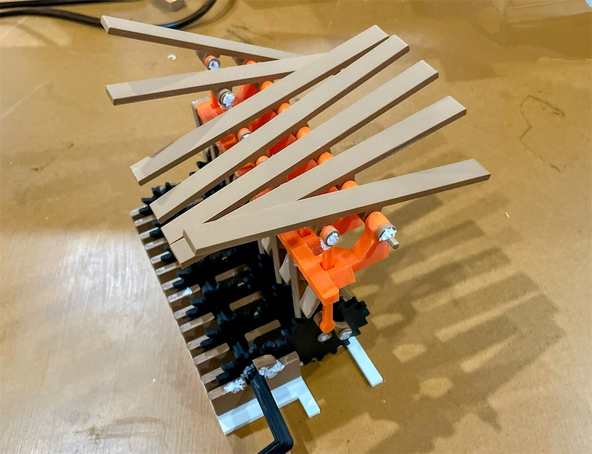

投稿日: 2025/04/10 08:10:08
カテゴリ: Kinetic Wave
サムネイル: 
以前からずっと作りたかった、Kinetic Waveを作ってみた。
試作機としては実はver. 3で、1号機と2号機は動きすらしなかった。
ユニットひとつひとつを試行錯誤しながら構成して、最終的には3Dペンとかグルーガンとかでくっつけたのだけれど、今後はプラモデルのように構造的に自然に組み立てできるようにしたい。
あとver. 1と2がそうであったように、リップル状（水滴の落ちたような波面）に本当はしたいので、今後改良を重ねていきたいな。